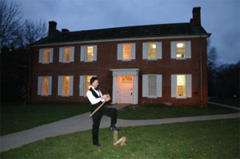
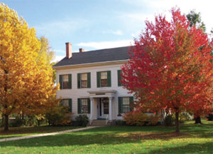
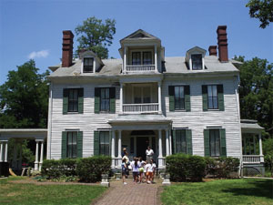
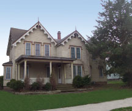
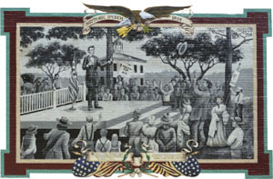
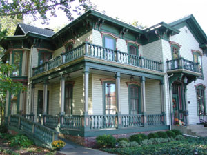
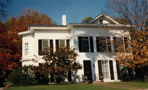
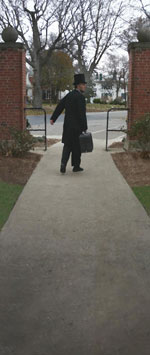

Audio tour sites
When you arrive at each destination, tune your
car radio to the frequency noted here or on the posted sign. If you have questions during your tour, call the Jacksonville Area Convention and Visitors Bureau at (217) 243-5678.
| PLEASE NOTE: The radio broadcast from each Looking for Lincoln property has been temporarily suspended, but will soon resume on a new frequency. If you would like to enjoy the broadcasts, you can download the MP3 files from this Web site. Or, please stop by the Jacksonville Convention and Visitors Bureau at 310 East State to obtain a CD that you can listen to in your car. The Visitors Bureau can be contacted at (217) 243-5678 for any questions. We apologize for the inconvenience. |
1. Beecher Hall

Illinois College Campus
Tune Radio to 92.5 FM
Beecher Hall, which was built in 1829-30 and originally
was known as the College Building, is the only structure
remaining on the Illinois College campus that would have
been familiar to New Salem friends of Abraham Lincoln,
several of whom, including David Rutledge, William Berry,
Harvey Ross and William and Lynn Greene, attended IC in
the 1830s. The New Salem residents most likely studied and
prayed within Beecher Hall’s walls, because in the early days
of IC, the building contained a classroom, a library, a chapel
and a dormitory. Beecher Hall was named after Edward
Beecher, the first president of IC, in 1888.
2. David A. Smith House

1061 Grove Street, SE Corner of Grove and Park
Tune Radio to 92.5 FM
David A. Smith, a Jacksonville attorney and colleague of
Abraham Lincoln, had this two-story, Federal-style house
built between 1852 and 1854. When Lincoln had legal
business in Jacksonville, he used Smith’s law office as his
headquarters. Records indicate that Lincoln and Smith were
associated with 68 cases as either co-counselors or opposing
attorneys. In one of their more famous cases, Lincoln
represented wealthy Jacksonville businessman Colonel James
Dunlap, while Smith represented Jacksonville newspaper
editor Paul Selby. Selby sued
Dunlap for $10,000 in actual and
punitive damages after Dunlap
and some of his associates
allegedly battered him. Ultimately,
the jury found for Selby, but only
awarded him $300 in damages.
3. Governor Duncan Mansion

4 Duncan Place, Centrally located in Duncan Park
Tune Radio to 92.5 FM
Governor Joseph Duncan, who served as governor of Illinois
from 1834 to 1838, had this two- and one-half-story house
constructed between 1833 and 1835. Tradition says that Lincoln
visited the Duncan home, and it is quite possible that happened,
given the fact that Lincoln lived in nearby New Salem and
Springfield during the time both
men were members of the Whig
Party. Lincoln served his first two
terms as a state representative while
Duncan was governor. In addition,
voting records show that Lincoln
cast ballots for Duncan three
times. Tours available.
4. Newton Bateman House

907 West State Street
Tune Radio to 92.5 FM
Newton Bateman, a well-known educator in Illinois in the
1800s and friend of Abraham Lincoln, lived in this Gothic
Revival-style house in the 1850s. He was principal of what
is purported to be the first free public high school in Illinois
— West Jacksonville District School — in the 1850s. Bateman,
while serving as state superintendent of schools, had an office
next to President-elect Lincoln in the Illinois Capitol in
Springfield, and the two men became friends in the months
prior to Lincoln’s
departure for Washington,
D.C. Bateman is said
to have been the last
person to shake hands
with Lincoln as the train
pulled away from the Springfield depot.
5. Lincoln and Slavery Mural

South Sandy Street
Tune Radio to 92.5 FM
(The mural is painted on the side of the building on Sandy Street,
at the southwest corner of Central Park.)
In 1856, Abraham Lincoln delivered a speech in the Morgan
County Courthouse park, now known as Central Park Plaza,
sharing his views about one of the hotly debated topics of the
day — the extension of slavery into newly organized territories
of the United States. Joseph O. King, a local merchant, later
recalled Lincoln’s stirring oratory. "One of the first strong antislavery
speeches made here was by Abraham Lincoln,"
remembered King. "He spoke
in the courthouse park, and
when he came out sharp
and strong against slavery, I
threw up my hat and shouted,
‘Hurray for Abe Lincoln for president of the United States.'"
6. 1859 Senate Race
Northeast corner of square
Tune Radio to 92.5 FM
On Monday September 27th, Lincoln arrived in Jacksonville by train from Springfield and was met by large delegations from Morgan, Cass, and Scott Counties. They moved from the depot to the square where Lincoln made one of his sixty-three speeches he had done across the state, contesting for the U.S. Senate. Lincoln was said to have spoken for two and a half hours.
7. James Jaquess House

339 East State Street
Tune Radio to 92.5 FM
James Jaquess, the
first president of the
Illinois Conference
Female Academy, now
MacMurray College,
once lived in this house.
Jaquess, a Methodist
minister, first met
Lincoln when he was preaching and Lincoln was practicing
law in central Illinois. During the Civil War, Lincoln entrusted
Jaquess with important missions. In 1863, Jaquess met with
Confederate officials to discuss ending the war. The following
year, Jaquess met with Confederate President Jefferson Davis,
who declared that the South would accept peace only if
it could remain independent. Jaquess gave an oral report
to Lincoln that was transcribed and printed as campaign
literature for the Union Republican Party.
8. The Civil War Governor
East State Street
Tune Radio to 92.5 FM
Richard Yates, the first graduate of Illinois College, shared strong views with Abraham Lincoln; they both supported the Whig Party and strongly opposed Stephen A. Douglas. Yates was the Radical Republican Governor of Illinois during the Civil War. He made trips to visit and encourage troops by supporting the sick and wounded. This is why he became known as the "Soldier's Friend." As the war was ending, Yates became a member of the U.S. Senate.
9. Whig Rivals and Friends
500 East State Street
Tune Radio to 92.5 FM
In 1831 John J. Hardin moved to Jacksonville. Hardin and Lincoln served in the Black Hawk War and they both were lawyers and Whig politicians who became rivals for leadership of the party. It is said that Hardin may have saved Lincoln's life by rushing to an island near Alton to stop a duel between Lincoln and General James Shields, at whom Lincoln poked fun in a published letter. Hardin persuaded the men to come to a compromise.
10. General Benjamin Grierson Mansion

852 East State Street
Tune Radio to 92.5 FM
Civil War hero General Benjamin Grierson once called this large
brick house home. In the mid-1850s, while living in Meredosia,
Grierson joined the new Republican Party and became
friends with one of its leaders, Abraham Lincoln. In 1860,
Grierson, an accomplished musician, wrote campaign music for
Lincoln’s first presidential campaign. The following year found
Grierson answering his friend President Lincoln's call to arms.
Grierson's actions during the four bloody years of the Civil War
transformed
the musician
and bandleader
into a nationally
known cavalry
commander
for the Union
Army.
